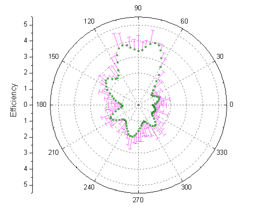
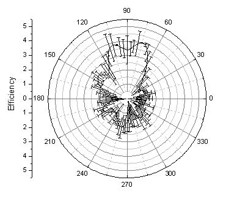
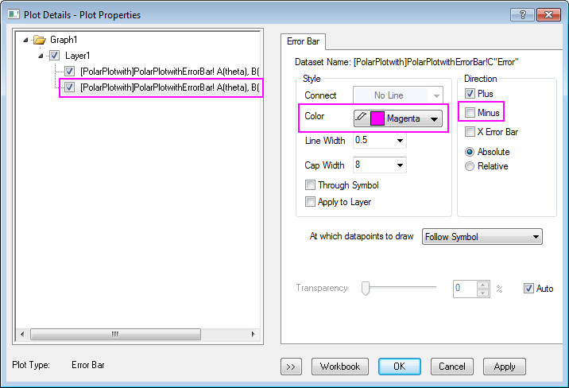
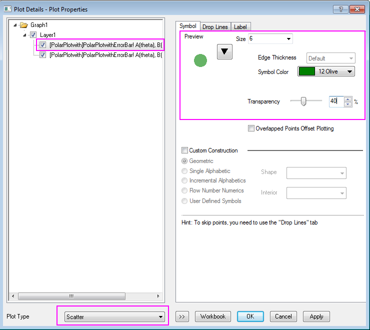
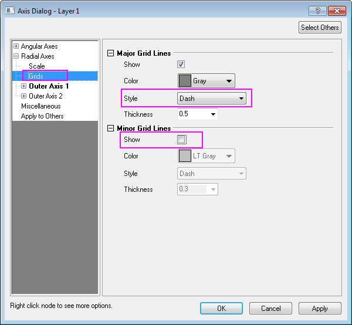

Polardiagramm mit Fehlerbalken
Polar-ErrBar
Zusammenfassung
Dieses Tutorial zeigt Ihnen, wie Sie ein polares Konturdiagramm mit Fehlerbalken erstellen.
-
- 
Was Sie lernen werden
Dieses Tutorial zeigt Ihnen, wie Sie:
- ein Polardiagramm mit Fehlerbalken erstellen,
- das Diagramm mit Hilfe der Dialoge Details Zeichnung und Achsen benutzerdefiniert anpassen.
Schritte
- Importieren Sie die Datendatei PolarPlotwithErrorBar.dat im <Origin-Verzeichnis>\Samples\Graphing\. (Origin-Version mind. erforderlich: 2015 SR0)Sie können diese Datendatei aber auch direkt herunterladen und in Origin importieren.
- Fahren Sie mit mit Ihrer Maus über Spalte col(C), bis der Cursor als nach unten weisender Pfeil angezeigt wird, und klicken Sie dann, um Spalte C zu markieren. Klicken Sie mit der rechten Maustaste, um das Kontextmenü aufzurufen, und setzen Sie diese Spalte als Y-Fehler.
- Um das Polardiagramm der Daten mit Fehlerbalken zu zeichnen, markieren Sie alle Spalten. Wählen Sie im Menü Zeichnen: Spezialisiert: Polar Theta(X) r(Y) oder klicken Sie auf die Schaltfläche Polar Kontur Theta(X) r(Y)
 auf der Symbolleiste 2D Grafiken.
auf der Symbolleiste 2D Grafiken.
- 
- Klicken Sie zum Öffnen des Dialogs Details Zeichnung doppelt auf das Diagramm. Ändern Sie auf der Registerkarte Fehlerbalken die Farbe in Magenta und entfernen Sie die negativen Fehlerbalken, indem Sie das Kontrollkästchen Minus, wie unten gezeigt, deaktivieren:
- 
- Wenn das linke Bedienfeld von Details Zeichnung ausgeblendet ist, klicken Sie auf die Schaltfläche mit den zwei Pfeilen unten links im Dialog. Das linke Bedienfeld stellt eine Baumansicht des Layers und der Daten dar, die der Anwender modifiziert. Es zeigt unten auch eine Liste der Diagrammtypen an. Verwenden Sie die Auswahlliste Diagrammtyp, um die Zeichnung von einem Linien- in ein Punktdiagramm umzuwandeln. Dies verändert die Registerkarten im rechten Bedienfeld und fügt die Registerkarte Symbole hinzu. Ändern Sie auf der Registerkarte Symbole Symbolstil, Symbolfarbe und die Transparenz, wie unten zu sehen. Um die Symbolfarbe auszuwählen, verwenden Sie die Option Individuell in der Auswahlliste der Symbolfarbe. Klicken Sie auf OK, um den Dialog zu schließen.
- 
- Der nächste Schritt besteht darin, die Gitternetzlinien der Radialachsen zu modifizieren. Bei diesen handelt es sich um die kreisförmigen Gitternetzlinien zwischen den inneren und äußeren Winkelachsen. Klicken Sie auf der linken Seite des Diagramms doppelt auf die vertikale Achse, um den Dialog Achsen (d.h. Radialachsen) zu öffnen. Wählen Sie auf der Seite Gitternetze die Option Radial im linken Bedienfeld. Ändern Sie die den Stil der Hauptgitternetzlinien in Striche und deaktivieren Sie das Kontrollkästchen zeigen für die Nebengitternetzlinien, wie unten zu sehen:
- 
- Ändern Sie auf die gleiche Weise die Gitternetzlinien der Winkelachsen, d.h. die Gitternetzlinien, die aus der Mitte der Zeichnung zu den Rändern gehen. Wählen Sie auf der Seite Gitternetze die Option Winkel im linken Bedienfeld. Ändern Sie den Stil der Hauptgitternetzlinien in Striche, setzen Sie Anfang bei auf Radialer Anfang und deaktivieren Sie das Kontrollkästchen Zeigen für die Nebengitternetzlinien. Klicken Sie auf OK, um die Änderungen zu speichern.

- Das fertiggestellte Polardiagramm sollte folgendermaßen aussehen: